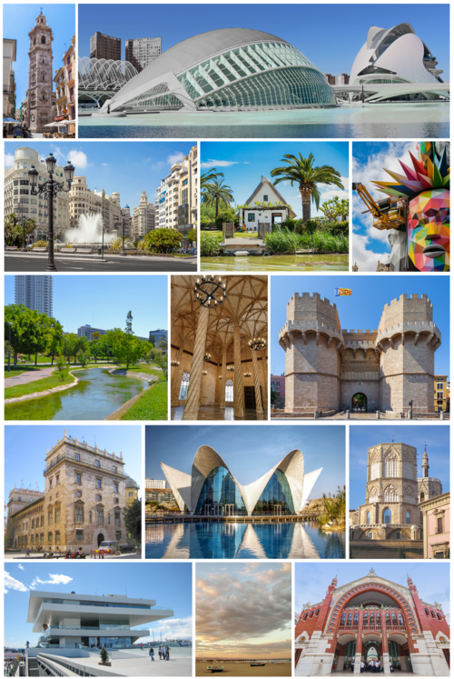

Name
The original Latin name of the city was Valentia (IPA: [waˈlɛntɪ.a]), meaning "strength" or "valour", due to the Roman practice of recognising the valour of former Roman soldiers after a war. The Roman historian Livy explains that the founding of Valentia in the 2nd century BC was due to the settling of the Roman soldiers who fought against a Lusitanian rebel, Viriatus, during the Third Lusitanian Raid of the Lusitanian War.
During the rule of the Muslim kingdoms in Spain, it had the title Medina at-Tarab ('City of Joy') according to one transliteration, or Medina at-Turab ('City of Sands') according to another, since it was located on the banks of the River Turia. It is not clear if the term Balansiyya was reserved for the entire Taifa of Valencia or also designated the city
Geography
Location
Located on the eastern coast of the Iberian Peninsula and the western part of the Mediterranean Sea, fronting the Gulf of Valencia, Valencia lies on the highly fertile alluvial silts accumulated on the floodplain formed in the lower course of the Turia River.[13] At its founding by the Romans, it stood on a river island in the Turia, 6.4 kilometres (4.0 mi) from the sea.
Climate
Valencia has a hot-summer Mediterranean climate (Köppen: Csa) with mild winters and hot, dry summers. According to Siegmund/Frankenberg climate classification, Valencia has a subtropical climate.
History
Roman colony
Located on the eastern coast of the Iberian Peninsula and the western part of the Mediterranean Sea, fronting the Gulf of Valencia, Valencia lies on the highly fertile alluvial silts accumulated on the floodplain formed in the lower course of the Turia River.[13] At its founding by the Romans, it stood on a river island in the Turia, 6.4 kilometres (4.0 mi) from the sea.
Middle ages
Valencia is one of the oldest cities in Spain, founded in the Roman period, c. 138 BC, under the name "Valentia Edetanorum". A few centuries later, with the power vacuum left by the demise of the Roman imperial administration, the Catholic Church assumed the reins of power in the city, coinciding with the first waves of the invading Germanic peoples (Suevi, Vandals and Alans, and later the Visigoths).
Modern history
Following the death of Ferdinand II in 1516, the nobiliary estate challenged the Crown amid the relative void of power.[48] The nobles earned the rejection from the people of Valencia, and the whole kingdom was plunged into armed revolt—the Revolt of the Brotherhoods—and full blown civil war between 1521 and 1522.
Muslims vassals were forced to convert in 1526 at behest of Charles V
Resent developments
On 3 July 2006, a major mass transit disaster, the Valencia Metro derailment, left 43 dead and 47 wounded.[61] Days later, on 9 July, the World Day of Families, during Mass at Valencia's Cathedral, Our Lady of the Forsaken Basilica, Pope Benedict XVI used the Sant Calze, a 1st-century Middle-Eastern artifact that some Catholics believe is the Holy Grail
Valencia was selected in 2003 to host the historic America's Cup yacht race, the first European city ever to do so. The America's Cup matches took place from April to July 2007. On 3 July 2007, Alinghi defeated Team New Zealand to retain the America's Cup. Twenty-two days later, on 25 July 2007, the leaders of the Alinghi syndicate, holder of the America's Cup, officially announced that Valencia would be the host city for the 33rd America's Cup, held in June 2009
Economy
Valencia enjoyed strong economic growth before the economic crisis of 2008, much of it spurred by tourism and the construction industry,[citation needed] with concurrent development and expansion of telecommunications and transport. The city's economy is service-oriented, as nearly 84% of the working population is employed in service sector occupations[citation needed]. However, the city still maintains an important industrial base, with 8.5% of the population employed in this sector. Growth has recently improved in the manufacturing sector, mainly automobile assembly; (The large factory of Ford Motor Company lies in a suburb of the city, Almussafes[64]). Agricultural activities are still carried on in the municipality, even though of relatively minor importance with only 1.9% of the working population and 3,973 ha (9,820 acres) planted mostly in orchards and citrus groves.
Port
Valencia's port is the biggest on the Mediterranean western coast,[68] the first of Spain in container traffic as of 2008[69] and the second of Spain[70] in total traffic, handling 20% of Spain's exports.[71] The main exports are foodstuffs and beverages. Other exports include oranges, furniture, ceramic tiles, fans, textiles and iron products. Valencia's manufacturing sector focuses on metallurgy, chemicals, textiles, shipbuilding and brewing. Small and medium-sized industries are an important part of the local economy, and before the current crisis unemployment was lower than the Spanish average.
Valencia's port underwent radical changes to accommodate the 32nd America's Cup in 2007. It was divided into two parts—one was unchanged while the other section was modified for the America's Cup festivities. The two sections remain divided by a wall that projects far into the water to maintain clean water for the America's Cup side.
Transport
Public transport is provided by the Ferrocarrils de la Generalitat Valenciana (FGV), which operates the Metrovalencia and other rail and bus services. The Estació del Nord (North Station) is the main railway terminus in Valencia. A new temporary station, Estació de València-Joaquín Sorolla, has been built on land adjacent to this terminus to accommodate high speed AVE trains to and from Madrid, Barcelona, Seville and Alicante. Valencia Airport is situated 9 km (5.6 mi) west of Valencia city centre. Alicante Airport is situated about 133 km (83 mi) south of center of Valencia.
Tourism
Starting in the mid-1990s, Valencia, formerly an industrial centre, saw rapid development that expanded its cultural and tourism possibilities, and transformed it into a newly vibrant city. Many local landmarks were restored, including the ancient Towers of the medieval city (Serrans Towers and Quart Towers), and the Sant Miquel dels Reis monastery (Monasterio de San Miguel de los Reyes), which now holds a conservation library. Whole sections of the old city, for example the Carmen Quarter, have been extensively renovated. The Passeig Marítim, a 4 km (2 mi) long palm tree-lined promenade was constructed along the beaches of the north side of the port (Platja de Les Arenes, Platja del Cabanyal and Platja de la Malva-rosa).
Government and administration
Valencia is a municipality, the basic local administrative division in Spain. The Ayuntamiento is the body charged with the municipal government and administration.[76] The Plenary of the ayuntamiento/ajuntament (known as Consell Municipal de València in the case of Valencia) is formed by 33 elected municipal councillors, who in turn invest the mayor. The last municipal election took place on 26 May 2019. Since 2015, Joan Ribó (Compromís) serves as Mayor. He renewed his spell for a second mandate following the 2019 election
Demographics
The third largest city in Spain and the 24th most populous municipality in the European Union, Valencia has a population of 809,267[78] within its administrative limits on a land area of 134.6 km2 (52 sq mi). The urban area of Valencia extending beyond the administrative city limits has a population of between 1,564,145[79][80] and 1,595,000.[3] Also according to Spanish Ministry of Development, Greater Urban Area (es. Gran Área Urbana) within Horta of Valencia has a population of 1,551,585 on area of 62,881 km2 (24,278 sq mi), in period of 2001-2011 there was a population increase of 191,842 people, an increase of 14.1%.[6] About 2 million people live in the Valencia metropolitan area. According to the CityPopulation.de, metropolitan area has a population of 1,770,742,[81] according to the Organization for Economic Cooperation and Development: 2,300,000,[82] according to the World Gazetteer: 2,513,965[83] and according to the Eurostat: 2,522,383.[2] Between 2007 and 2008 there was a 14% increase in the foreign born population with the largest numeric increases by country being from Bolivia, Romania and Italy. This growth in the foreign born population, which rose from 1.5% in the year 2000[84] to 9.1% in 2009,[85] has also occurred in the two larger cities of Madrid and Barcelona.[86] The main countries of origin were Romania, United Kingdom and Bulgaria
Culture
Valencia is known internationally for the Falles (Les Falles), a local festival held in March, as well as for paella valenciana, traditional Valencian ceramics, craftsmanship in traditional dress, and the architecture of the City of Arts and Sciences, designed by Santiago Calatrava and Félix Candela.